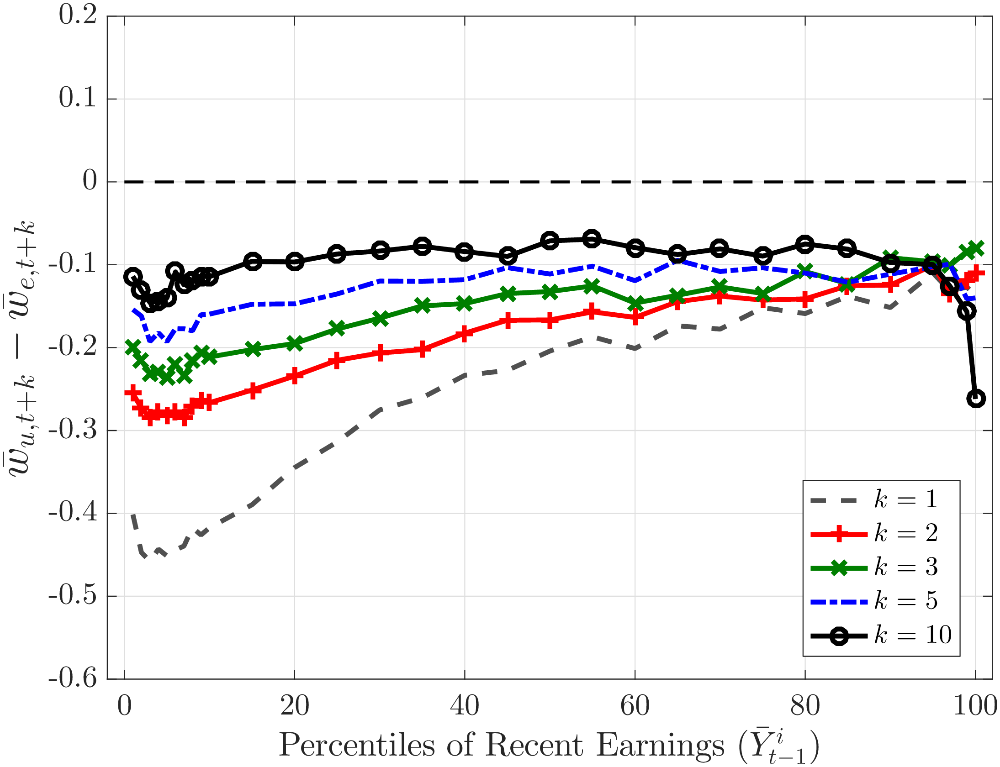
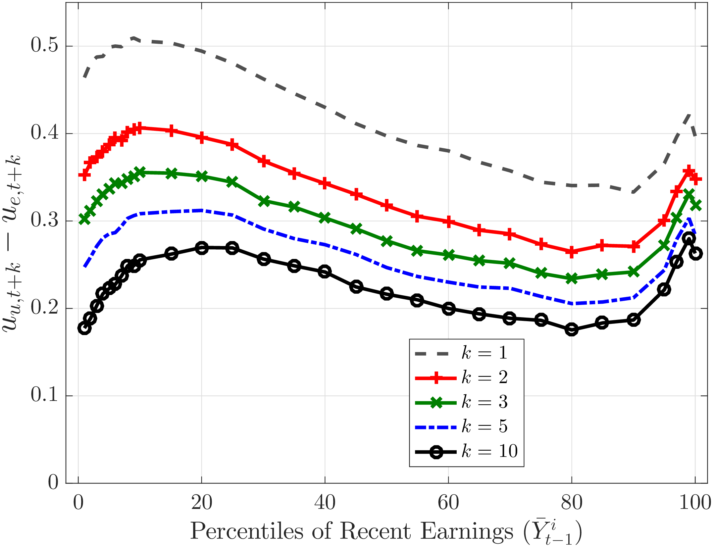

In a seminal paper, Jacobson, LaLonde and Sullivan (1993) studied the scarring effects of job losses using an administrative data set that covers workers in the state of Pennsylvania in the 1980s. To control for unobservable heterogeneity, they focused on workers who had stable jobs–identified as workers with long job tenure–but who separated from their employers during a mass layoff (identified as a period during which the employer shrinks by at least 30%). They found large and persistent earnings losses for displaced workers—on the order of 25% of the average earnings six years after separation—relative to workers with similar characteristics that stayed with the same employer during the same episode.
In a recent paper, Von Wachter, Song and Manchester (2009) significantly extended these results by using an administrative data set that covers the entire United States over a much longer time horizon. This richer data set allowed them to measure scarring effects 20 years after the job separation and also obtain nationally representative estimates. It also allowed them to keep individuals with zero earnings in the sample, whom Jacobson et al were forced to drop because they could not distinguish between a worker who had no earnings from one who moved out of Pennsylvania. The inclusion of zeros yielded very large estimates of scarring effects at longer horizons—on the order of 20% twenty years after separation.
Our paper is in the same spirit as this literature but also differs in two key aspects. First, rather than focusing on involuntary job losses during mass layoffs, we study more broadly the effects of spending one year (or more) out of work regardless of the reasons behind it. In other words, if we consider two workers who are otherwise similar (in a sense to be made precise in a moment) where one of them spends year \(t\) as non-employed, what does this tell us about his future earnings relative to his peer who remained employed in \(t\)?
Second, whereas these studies focused on the average effects by controlling for worker heterogeneity (through fixed worker effects and other means), our focus is precisely on how the long term consequences vary across workers that differ in their history leading up to the period of non-employment. To achieve this, we sort workers (within each age group) by their 5-year average earnings before a given time period \(t\), and group them into 100 percentile bins. In year \(t\), a fraction of workers within each percentile bin ends up being nonemployed for the full year. We then track this subset of workers over the following 10 years and compare their earnings to the workers in the same bin who were employed in year \(t\). The latter is then our control group for the non-employed. Because our bins are very fine and we track these workers for a long period before they are non-employed, we believe this approach provides a good comparison group for this analysis. We have also repeated the same experiment by conditioning on past 10-year average earnings and found similar results.
The advantage of our approach is that it encompasses a much broader set of circumstances that lead to full-year non-employment than job displacement. Some natural candidates are worth mentioning, such as long-term illness or disability, time off for childrearing, education, among others. Disability is unlikely to be a major source of the large earnings losses we find, because the effects are only slightly smaller for younger workers who exhibit a much smaller propensity to be disabled than the prime age workers. We focus on men, so taking time off from the labor force for child rearing is less likely to be an issue. Finally, taking time off for education is also not likely to be a major driver given that we focus on prime age workers.
Our results are broadly consistent with the findings of the scarring effects literature. We find even larger long-term earnings losses relative to these studies—on the order of 35-40% after 10 years—probably because we focus on a broader set of drivers of non-employment. Our sample period also extends to 2010 and therefore covers the 2000s with very weak income growth for men as well as the Great Recession period, unlike these studies that were predominantly focused on the 1980s and 1990s. Our main finding is that the scarring effects of non-employment vary greatly across workers with different past earnings levels and are larger for low-earnings workers as well as those in the top 5% of the past earnings distribution. Furthermore, the large losses mostly result from the higher incidence of future non-employment for the treatment group, rather than their lower earnings conditional on working. More concretely, focusing on workers who are employed 10 years after the shock, we find much smaller earnings losses–on the order of 8-10% compared to 35-40% for the sample without conditioning. Furthermore, the large effects for the lower-income individuals are almost entirely due to employment effects: when we condition on future employment earnings losses are virtually independent of past earnings, except at the very top and very bottom of the distribution.
Here are the details.
I. Data and Empirical Methodology
We use a 10% representative panel sample of males from the Master Earnings File (MEF) of the U.S. Social Security Administration records. The MEF provides information on individual annual labor earnings, that includes all wages and salaries, bonuses, and exercised stock options as reported in the Box 1 of W-2 form. Our sample period covers between 1978 and 2010 during which the wage earnings data are uncapped. We use personal consumption expenditure (PCE) deflator to convert nominal values into real taking 2005 as the base year.
Sample Selection
Below, we outline our sample construction and methodology. Further details can be found in Guvenen et al. (2015).
We construct a revolving panel to use the sample size most efficiently. First, we call an individual-year earnings observation “admissible” in year \(t\) if he (i) is between 25 and 60 years old, (ii) he is in the labor market—that is, his annual earnings is above a time-varying threshold \(Y_{\text{min},t}\), and (iii) is not self-employed; i.e., his self employment income does not exceed the maximum of \(Y_{\text{min},t}\) and 10% of his wage/salary earnings in \(t\). We define \(Y_{\text{min},t}\) as the annual earnings level corresponding to one quarter of full-time work at half of the legal minimum wage (approximately $1,885 in 2010).
We include an individual in our sample if he is admissible in \(t-1\) and in at least two more years between \(t-5\) and \(t-2\). This guarantees that the individual has some degree of labor market attachment and the measure of recent earnings is reliable. We define recent earnings of individual \(i\) at age \(h-1\) (in year \(t-1\)), \(\bar{Y}_{t-1}^{i}\), as the average past earnings between \(h-5\) and \(h-1\). We normalize this measure by the average earnings of the same age group to ensure that recent earnings are comparable across age. Finally, we exclude individuals who are self-employed in any of the \(t+k\) for \(k=1,2,3,5,10\) to make sure that the future earnings losses we capture are not due to the switch from wage and salary job to self employment.
Methodology
In each year \(t\), we first categorize individuals into two groups with respect to their age in \(t-1\): “young workers” (ages 25 to 34) and “prime-age workers” (ages 35 to 50). Then, within each age group, we rank and group individuals into 100 percentile bins based on \(\bar{Y}_{t-1}^{i}\). Specifically, our groups consist of percentiles 1, 2,…, 10, 11-15, 16-20,…, 91-95, 96-97, 98-99, 100.1 Next, within each such group we identify the treatment and control groups by workers’ employment status in year \(t\). In particular, the control group (employed) consists of workers with annual earnings above the minimum income threshold \(Y_{\text{min},t}\), and the treatment group (long-term non-employed) are those below the threshold. We should note from the onset that we are measuring an extreme form of non-employment and that the control group potentially contains workers that have shorter non-employment spells in year \(t\) lasting several months. Such individuals would show up in the control group if they earn more than the threshold in the months they work.
II. Results
In this section, we investigate how the treated individuals fare over the next 1, 2, 3, 5, and 10 years relative to the control group.
A. Long-Term Effects of Full-Year Non-employment
Figure 1 plots the log difference between the average earnings of the treatment and control groups after 1, 2, 3, 5, and 10 years for prime age males across the recent earnings distribution.2 Note that we keep individuals that have zero earnings in any year \(t+k\) to ensure that there are no compositional changes within a group over time.
Figure 1. Average Earnings Losses
{kind=link}
A couple of remarks are in order. First, income losses incurred after 1 year, in \(t+1\), are very large (between 50 and 120 log points). This is to be expected, as some of the treated individuals are likely to be non-employed for several months in the beginning of year \(t+1\). Second, and more importantly, the earnings losses of the treatment relative to the control after \(t+1\) exhibit a striking pattern with respect to the level of earnings. In particular, these losses decline with earnings, except for very top earners. In the following 9 years, low income workers recover faster, and earnings losses are essentially the same for all past earnings groups. Third, even after 10 years, there are sizable earnings losses associated with long-term non-employment. Figure 1 shows that these losses vary between 30 and 60 log points and are smallest for individuals in the 80th percentile of the recent earnings distribution.
B. Intensive- vs. Extensive Margin Losses
Average earnings of group \(j\) in year \(t\), \(y_{jt}\) can be simply written as a product of the employment rate \(1-u_{jt}\) and the average annual earnings of the employed \(\bar{w}_{jt}\) within this group.
\[ y_{jt} = (1-u_{jt})\bar{w}_{jt} \]
(1) shows that the larger earnings losses of the treatment group might be due to an increase in the incidence of non-employment (\(u_{jt}\)), which we refer to as the extensive margin, and a decrease in the wages (\(\bar{w}_{jt}\)) conditional on working, which we label as the intensive margin. To quantify the importance of these two margins, we compute and plot each of them in (1) separately for each group.
We start by discussing the intensive margin. Figure 2a plots the difference in annual earnings conditional on working, \(\bar{w}_{jt+k}\), between the treatment and the control. Several patterns are qualitatively similar to those in figure 1. For example, earnings losses 1 year following non-employment decrease with the level of recent earnings, except at the top. The profile of losses gets flatter over time, and becomes essentially flat 10 years after non-employment (again with the exception of the high end of the distribution). Most notably, conditional on working, the earnings differences between the treated and the control group are much smaller. For example, 10 years after non-employment, those that are employed in \(t+10\) face earnings losses of around 10 log points. This constitutes between 20 to 35 percent of total earnings losses.
Consequently, the larger portion of the earnings loss is due to the extensive margin differences, which we now turn to. Figure 2b displays the difference in the non-employment rates \(u_{jt+k}\) between the treatment and control groups. Those that are non-employed in year \(t\) are a lot more likely to be also non-employed in any subsequent year \(t+k\). For example, for low income workers, a full-year non-employment in a year is associated with almost a 50 percentage points higher non-employment rate in the following year. Clearly, this generates the bulk of the average income losses within each group documented in figure 1. Furthermore, the non-employment gap tends to be higher for workers with low past income levels, ranging from \(40\%\) for P10 workers to \(27\%\) for P90 workers by \(t+2\). Over time, this gap shrinks further and by \(t+10\) it varies between \(20\%\) and \(30\%\).


C. Interpreting the results
Recently, several papers documented effects of unemployment on future separation rates (see for example Krolikowski (forthcoming) and Jarosch (2015)). In particular, Jarosch (2015) studies a job ladder model in which jobs differ along two dimensions; productivity and job security. In this setting a job loss causes persistent earnings losses for two reasons. First, one loses the position at job the ladder, and it takes time to climb back up. Second, the worker also loses valuable job security, resulting in higher unemployment risk in the future, thereby reinforcing the wage scars. These results are qualitatively consistent with our empirical findings.
While theoretically compelling, there are some caveats to this interpretation. In particular, ex-ante heterogeneity in unemployment risk can also generate scarring effects through selection. The treatment group may consist of higher-unemployment risk workers, which, in turn, have lower future earnings (see Kapon et al. (2016)).
III. Final Thoughts
Using administrative data we studied the long term consequences of not working for an extended period of time. We found very large scarring effects that are particularly larger for low-earnings workers as well as those in the top end of the past earnings distribution. Furthermore, a higher incidence of future non-employment is the main culprit for the large losses.
These heterogeneous scarring effects have important implications for safety net policies. For example, unemployment benefits are designed to insure workers against short-run losses, and fall short of providing insurance against long-term losses. Furthermore, optimal policies should take into account the variation in the scarring effects across the earnings distribution.